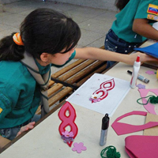

La Manada
Unidad compuesta por todos los Lobatos, Lobeznas y adultos encargados de la unidad. Es la "familia feliz" en la que los niños viven sus juegos y fantasías. Está formada por un grupo de chicos y chicas entre 7 y 11 años
Para su desarrollo dentro del Juego Scout y como herramienta pedagógica todo está ambientado entorno a la novela "El libro de las Tierras Vírgenes" escrita por Rudyard Kipling.
Este libro es usado como un instrumento pedagógico con aspectos positivos y negativos del comportamiento humano, que ayudan a los pequeños a aprender y a divertirse al mismo tiempo.

La relación entre la metodología de manada y la del libro de Kipling se ve reflejada en los siguientes aspectos:
- Manada: Unidad formada por lobatos o lobeznas.
- Akela: es el Lobo Alfa de la manada, adulto encargado de conducir la unidad, conocido también como Jefe de Manada.
- Baloo, Bagheera, Hati, Iki, Rachsa, etc: son los animales que en el Libro de las Selva ayudan a Mowgli a superar los territorios y que son representados por los otros adultos de la manada, conocidos tambiém como subjefes de unidad.
Un lobato o lobezna es un miembro de la sección menor del Movimiento Scout. Son niños y niñas entre 7 y 11 años de edad. La práctica del Escultismo a esta edad es a menudo denominado Lobatismo.